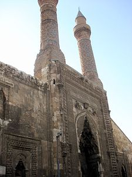
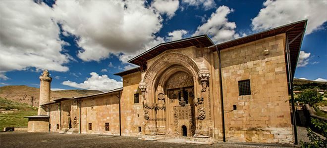

A cultural hub as well as an industrial one, Sivas contains many examples
of 13th-century Seljuk architecture.The Mavi Medrese from 1271, the Şifaiye Medresesi
from 1218 and the Çifte Minare Medresesi from 1271,with its intricately carved façade
and minarets, are among the most noteworthy monuments.The oldest surviving mosque is
the Grand Mosque (Ulu Camii) completed in 1196 is famous for its simplicity.
The city is also famous for its Medreses (Islamic seminaries). Gök Medresesi
(the Celestial Madrasa; depicted on the obverse of the Turkish 500 lira banknote of
1927-1939[12]) and Mavi Medrese, Sifaiye Medresesi,on the other hand, was completed
earlier, on the eve of the second wave of Turkic immigration to Anatolia,in 1218 and
with its intricately carved façade and minarets are among the most noteworthy edifices
carries on the traditional Seljuk Medrese plan.
The city also contains some fine examples of the Ottoman architectural style.
Kurşunlu Hamamı (Leaden Bath) which was completed in 1576, is the largest Turkish
bath in the city and it contains many details from the classical Ottoman bath building.
Behrampaşa Hanı (Caravansaray), was completed in 1573 and it is famous for the lion motifs
around its windows.
Here are some of them
Sivas Çifte Minare
Divriği Ulu Cami
